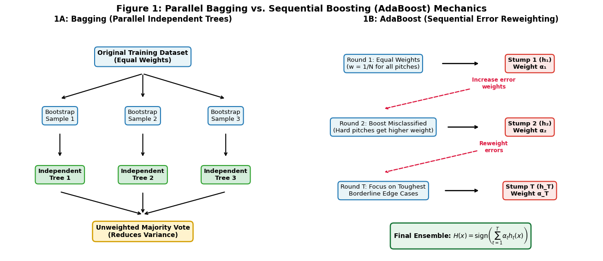
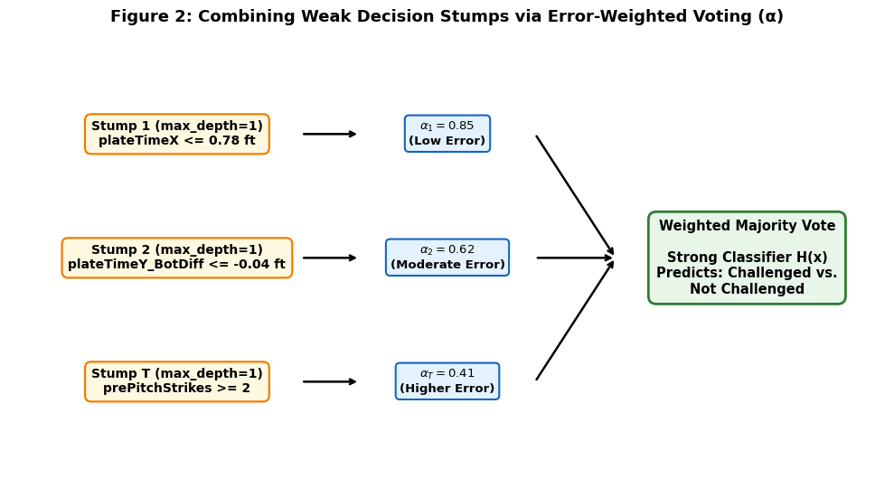
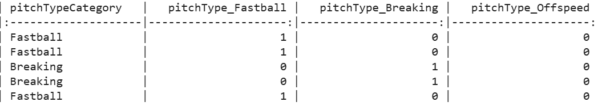

AdaBoost Overview
Adaptive Boosting (AdaBoost) is a sequential ensemble machine learning algorithm that combines many simple, "weak" learners—typically single-split Decision Stumps (decision trees with max_depth=1)—into a single high-accuracy "strong" classifier. Unlike standalone deep decision trees that can overfit noisy training rows, or parallel bagging methods like Random Forests that train independent trees on random bootstrap samples, AdaBoost trains learners sequentially so that each new stump focuses specifically on the mistakes made by its predecessors.
1. Sequential Error Reweighting vs. Parallel Bagging
At the start of training (\(t = 1\)), every observation in the training dataset of size \(N\) is assigned an equal sample weight \(w_i^{(1)} = \frac{1}{N}\). After each weak stump \(h_t(x)\) is fitted, AdaBoost evaluates its weighted classification error \(\varepsilon_t\) across all training points. Observations that were misclassified receive increased sample weights in round \(t + 1\), while correctly classified observations have their weights reduced, as contrasted against parallel bagging in Figure 1.

2. Mathematical Formulation of AdaBoost
In each boosting round \(t = 1, \dots, T\), the algorithm computes the stump's weighted error rate \(\varepsilon_t\) and assigns it an estimator voting weight \(\alpha_t\) scaled by the learning rate \(\eta \in (0, 1]\):
Stump Voting Weight (\(\alpha_t\)) Formula
Where \(\varepsilon_t\) is the weighted error rate of stump \(h_t\) and \(\eta\) is the learning rate shrinkage factor. Stumps with lower error receive larger \(\alpha_t\) voting weights, while a stump performing at random guessing (\(\varepsilon_t = 0.5\)) receives zero weight (\(\alpha_t = 0\)).
Once \(\alpha_t\) is determined, AdaBoost updates the sample weight \(w_i\) for every training observation \(i\) and normalizes the weights so they sum to \(1\) before fitting the next stump:
Sample Weight Update Rule
Where \(y_i \in \{-1, +1\}\) is the true class label, \(h_t(x_i) \in \{-1, +1\}\) is the stump's prediction, and \(Z_t\) is a normalization constant. Misclassified points (\(y_i h_t(x_i) = -1\)) are multiplied by \(e^{+\alpha_t} > 1\), forcing the next stump to prioritize them.
After \(T\) boosting rounds (controlled by n_estimators), all weak stumps combine via a weighted majority vote to form the final strong classifier \(H(x)\), as illustrated in Figure 2:
Final AdaBoost Ensemble Prediction
Tuning the trade-off between n_estimators (\(T\)) and learning_rate (\(\eta\)) prevents overfitting while allowing the ensemble to carve out sharp, non-linear decision boundaries.

3. Application to the ABS Challenge Research Project
Within this study, AdaBoost is evaluated across the exact same four pitch-level binary classification tasks examined in earlier models:
- Batter Challenge Intent: Predicting whether a hitter appeals a called strike or passes up the challenge window using spatial zone deviations and game-state context.
- Batter Challenge Outcome: Predicting whether an active hitter challenge results in an overturned call or a confirmed ruling based purely on non-spatial situational metadata.
- Defense Challenge Intent: Predicting whether a pitcher or catcher appeals a called ball.
- Defense Challenge Outcome: Predicting whether a defensive appeal successfully overturns a called ball into a strike or stands as confirmed.
Evaluating AdaBoost on identical holdout splits enables a direct comparison against the single Decision Trees to determine whether sequential boosting improves minority-class recall and overall classification accuracy.
Data Prep
1. Categorical Feature One-Hot Encoding
Because Scikit-Learn's DecisionTreeClassifier stumps require purely numerical inputs and cannot split directly on raw text strings, nominal pitch classifications were transformed via One-Hot Encoding. Raw pitch identifiers (pitchTypeId) were first mapped into three descriptive pitch categories (Fastball, Breaking, and Offspeed) inside a categorical column (pitchTypeCategory), and then expanded using pd.get_dummies() into three binary indicator columns:
-
pitchType_Fastball: Binary indicator (1or0) identifying four-seam, sinker, cutter, and fastball deliveries. -
pitchType_Breaking: Binary indicator (1or0) identifying slider, curveball, knuckle-curve, and sweeper deliveries. -
pitchType_Offspeed: Binary indicator (1or0) identifying changeups, splitters, and remaining offspeed deliveries.
Unlike integer-encoding categories as 1, 2, 3—which imposes an artificial numerical ordering between pitch types—one-hot encoding allows individual decision stumps to isolate any single pitch family cleanly with a simple threshold split.

pitchTypeCategory text labels into binary numeric columns (pitchType_Fastball, pitchType_Breaking, and pitchType_Offspeed).2. Feature Matrix Segmentation & Class Imbalance Weighting
-
Intent vs. Outcome Feature Separation: For Batter Challenge Intent (85,240 training / 21,311 test rows) and Defense Challenge Intent (190,555 training / 47,639 test rows), all 16 spatial and situational features—including horizontal and vertical strike-zone border margins (
plateTimeX,plateTimeY_topDiff, andplateTimeY_BotDiff)—were included. For Batter Challenge Outcome (3,811 training / 953 test rows) and Defense Challenge Outcome (4,632 training / 1,159 test rows), those three spatial coordinates were removed, leaving 13 non-spatial situational and velocity features so models could not exploit rulebook zone geometry directly. -
Balanced Sample Weighting (
compute_sample_weight): Unlike standalone Decision Trees, Scikit-Learn'sAdaBoostClassifierdoes not accept a directclass_weightinitialization argument. To prevent the skewed challenge intent ensembles (~95.6% unchallenged for batters and ~97.6% unchallenged for defense) from collapsing into majority-class predictions, balanced sample weights were computed strictly inside each training fold viacompute_sample_weight("balanced", y_train)and passed tofit(..., sample_weight=sw). The naturally balanced outcome tasks were trained with uniform sample weights.


Dataset Links:
- Batter-challengeable Pitches CSV: MLBData-ABSChallengeablePitches-Batters-FullSeason.csv
- Defense-challengeable Pitches CSV: MLBData-ABSChallengeablePitches-Defense-FullSeason.csv